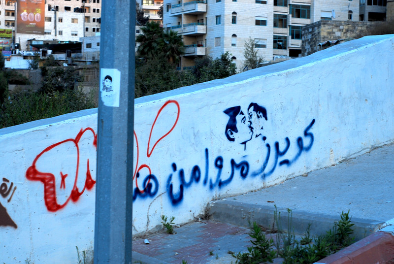
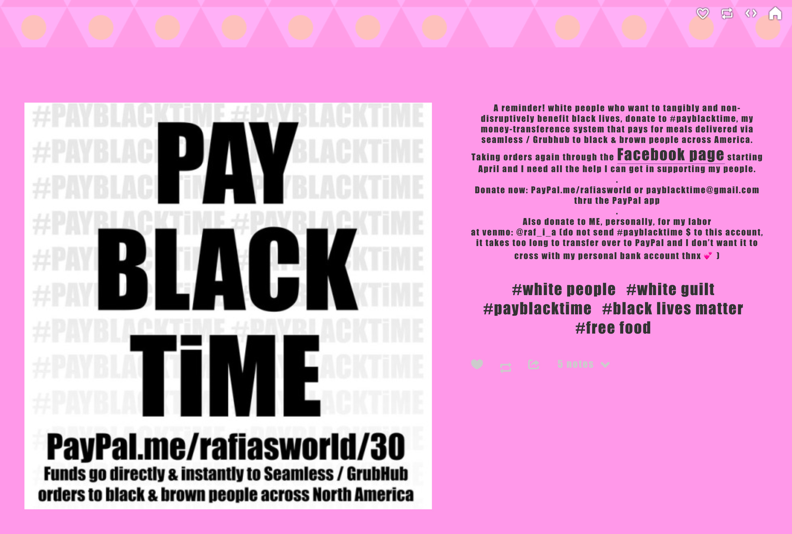
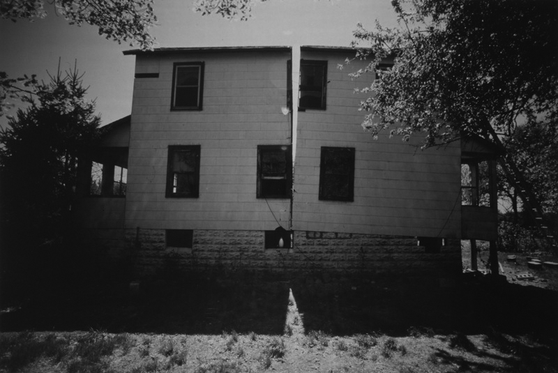
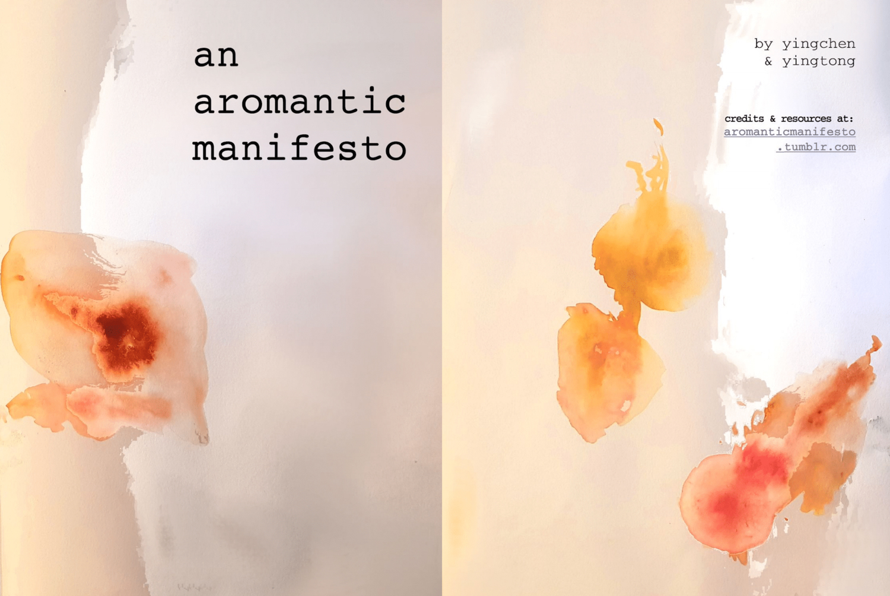
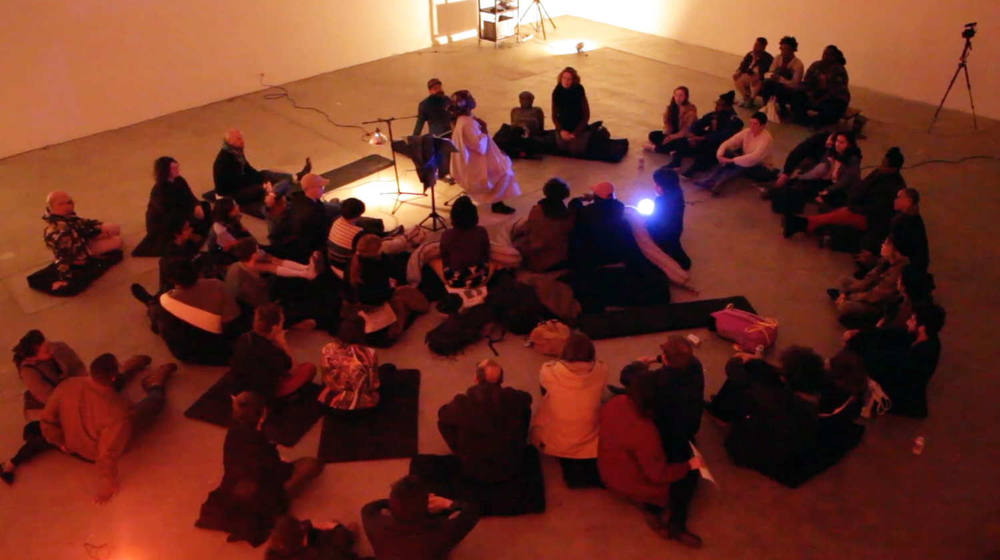
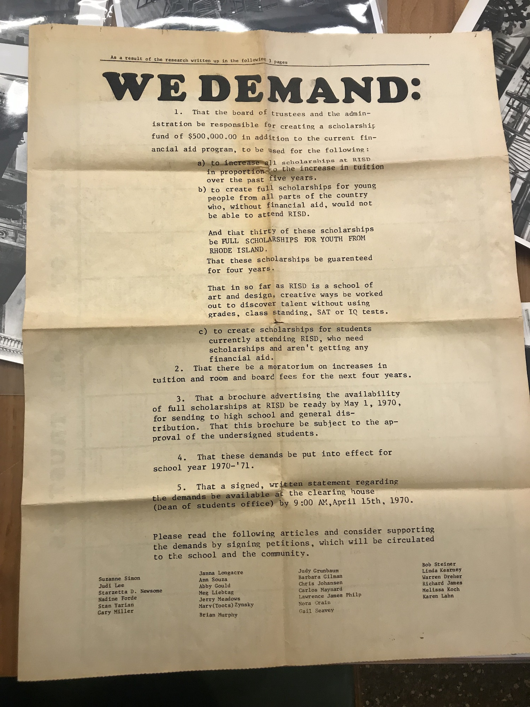
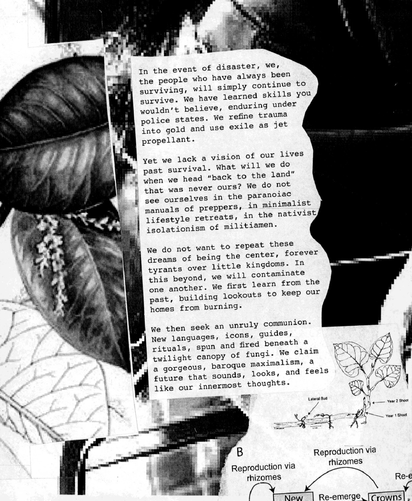

Urgency Lab
Image Text Ithaca
July 1–13, 2019
Instructor: Paul Soulellis
Urgency Lab is a series of workshops and experiments, over the course of eight 3.5 hour sessions, juxtaposing radical acts of generosity with alternative ways of making work in relation to power.
Course overview, learning goals, scaffolding, studio structure, preparation
Course overview
How do we address what’s truly urgent today? Urgent for whom? Crisis conditions have infused every aspect of culture and society with doubt, but the role and efficacy of art and design as a means for change is still debated. We’ll begin this two-week studio course by defining what urgency is on our own terms, casting a wide view towards climate, gender, race, and oppression. Can artists and designers loosen hegemonic power?
We’ll engage with a range of positions for guidance and inspiration through readings and discussion, both within and outside of art and design discourse, with a particular emphasis on queer methodologies and historically marginalized perspectives. We’ll draw upon Fred Moten and Stefano Harney’s concept of the undercommons as a way to imagine our own position within an institutional context, and we will also consider the question of urgent craft. How might legacy art and design techniques be subverted (altered, manipulated, destroyed) to produce new, non-normative forms? Urgency Lab will be a collaboratively designed space, so determining the studio’s criteria, scope, and output as a group will itself be an experiment in collective, peer-to-peer making as an act of resistance.
Learning goals
— Develop collaborative strategies for transforming group dynamics into a safe space for experimental making, discourse, and critique
— Explore contemporary theories around queering, decolonizing, and other non-normative methodologies in relation to art and design, and work to interpret these ideas into the studio
— Experiment with non-normative techniques for making art and design like (but not limited to) disruption, collective action, generosity, withdrawal, failure, and refusal
— Experiment with new forms of disseminating, publishing, and distributing our work
— Experiment with radical acts of generosity and care inside and outside the studio space
— Explore different modes of sharing and exchanging ideas within the studio
Scaffolding
1 LOCATION / SPECULATION
2 COLLECTIVE CARE
3 URGENT CRAFT
4 POWER / EXCHANGE / CONTAMINATION
5 SLOWNESS, COMPLAINT, EXHAUSTION, REFUSAL
6 CHOREOGRAPHY OF RESISTANCE
Studio structure
Let’s allow our studio to shift and morph as the sessions progress, based on your collective participation and feedback. To get started we’ll use the proposed scaffolding as loose navigation through the eight sessions. Studio time will be devoted to various combinations of workshops, exercises, readings, discussions, reviews, and other kinds of events. I’m open to experimenting with the scaffolding and the format as the course progresses!
Preparation
Please complete these six readings before July 1—
- Nora N. Khan, “The Wild Ass Beyond,”, in the zine A Wild Ass Beyond: ApocalypseRN by American Artist, Caitlin Cherry, Nora N. Khan, Sondra Perry (2018)
- Jack Halberstam, “The Wild Beyond: With and for the Undercommons,” introduction to The Undercommons: Fugitive Planning & Black Study by Stefano Harney and Fred Moten (2013)
- Stefano Harney and Fred Moten, “The University and the Undercommons,” in The Undercommons: Fugitive Planning & Black Study (2013)
- Jack Halberstam, “Introduction: Low Theory,” in The Queer Art of Failure (2011)
- Anna Lowenhaupt Tsing, The Mushroom at the End of the World: On the Possibility of Life in Capitalist Ruins, Part 1 (2015)
- Using the following list as a guide, choose at least one additional reading or work. It can be any one of these readings, other texts found within these books, or another work by any of these authors/artists. Be prepared to share your selection with the group in the form of a discussion.
- Sara Ahmed, “Strategic Inefficiency” (2018)
- American Artist, “Failure and Markup Language: Remembering Sandra Bland,” GenderFail: An Anthology of Failure (2018)
- Sasha Costanza-Chock, “Design Justice, AI, and Escape from the Matrix of Domination” in GenderFail: An Anthology of Failure (2018)
- Laboria Cuboniks, “Xenofeminism: A Politics for Alienation” (2018)
- Demian DinéYazhi´, AN INFECTED SUNSET (2018)
- Andrea Fraser, 2016 in Museums, Money, and Politics (2018)
- Interview with Andrea Fraser and Helen Molesworth, Bomb Magazine (2018)
- Reina Gossett, Eric A. Stanley, Johanna Burton (ed), Trap Door: Trans Cultural Production and the Politics of Visibility (2018)
- Alexis Pauline Gumbs, “We Can Learn to Mother Ourselves: The Queer Survival of Black Feminism 1968–1996” (2010)
- Jack Halberstam, The Queer Art of Failure (2012)
- Nicole Killian, “What Does Queering Education Actually Look Like in Practice?” (2019)
- Lucy Lippard, “Time Capsule” (2007)
- Audre Lorde, The Master’s Tools Will Never Dismantle the Master’s House (1978)
- Audre Lorde, “A Litany for Survival” (1978)
- Fred Moten and Stefano Harney, The Undercommons: Fugitive Planning & Black Study (2013)
- Nate Pyper, I Take the Sign with Me (2018)
- Simon Sheikh, “Circulation and Withdrawal” Parts 1 & 2, e-flux (2015)
- Astra Taylor, “Against Activism” (2016)
- Paula Varjack, “Manifesto for Artists in a Crumbling Arts Economy” (2017)
- McKenzie Wark, “A Billion Black Anthropocenes,” book review (2019)
- Stephen Wright, Toward a Lexicon of Usership (2013)
- yingchen & yingtong, “an aromantic manifesto” (2018)
Warm-up exercise to be completed by July 1—
Please bring a multiple to share with the group.
A multiple can be language (poetry, story, or otherwise), action (performance), or thing (objects). You are constructing an experience for each person in the studio, either collectively or individually. This can be a performance. Something you write. It can be an object you make, or something you find. It can be a secret. This warm-up exercise is about generosity and consideration in design. It is about cultivating community through the things you make and hold dear.
Due July 1 at our first meeting.



Gordon Matta-Clark, Splitting, 1974




#gender
#race
#power
#bias
#safety
#privacy
#privilege
#resistance
#climate change
#algorithmic control
#authority
#violence
#terror
#trauma
#human rights
#migration
#identity politics
#geo-politics
#postcolonial nationality
#representation
#protest
#whistleblower
#peer-2-peer
#mixed reality
#decentralization
#decolonization
#intersectionality
#failure and refutation
One must continue to work for the possibility of a poetry of the future.
Gayatri Chakravorty Spivak
Back to top